Lab3_Multi-Output Circuits: Encoders, Decoders, and Memories
Introduction
Boolean expressions are used to output a Boolean function of a number of variables. Dataflow constructs like assign can be used to model such functions. Some circuits have multiple outputs and multiple inputs. In this lab, you will design encoders and decoders and read-only memories.
Multi-output Decoder Circuits
Decoders are combinatorial circuits that have multiple outputs. They are widely used in memory chips to select one of the words addressed by the address input. For example, an 8-word memory will have a three-bit address input. The decoder will decode the 3-bit address and generate a select line for one of the eight words corresponding to the input address. The 3-to-8 decoder symbol and the truth table are shown below.
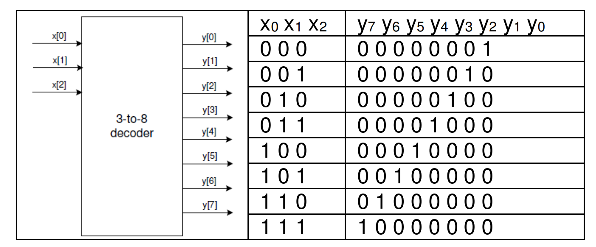
Such circuits, also known as binary decoders, can be modeled using dataflow statements as only each output is true for a unique input combination.
Part3-1-1
Design a 3-to-8-line decoder. Use dataflow modeling constructs.
Create and add the Verilog module, naming it decoder_3to8_dataflow.v, that defines the 3-to-8 line decoder with three-bit input x and 8-bit output y. Use dataflow modeling constructs.
lab3_1_1.v
// Define the module with a 3-bit input x and an 8-bit output y.
module lab3_1_1(
input [2:0] x, // 3-bit input used to select one of the eight outputs
output [7:0] y // 8-bit output where only one bit is set to 1 based on input x
);
// Implement the 3-to-8 line decoder functionality using dataflow modeling.
// Each line of y is set to 1 only when x matches the corresponding binary value.
// Otherwise, the line is set to 0.
assign y[0] = (x == 3'b000) ? 1'b1 : 1'b0; // y[0] is high if x is 000
assign y[1] = (x == 3'b001) ? 1'b1 : 1'b0; // y[1] is high if x is 001
assign y[2] = (x == 3'b010) ? 1'b1 : 1'b0; // y[2] is high if x is 010
assign y[3] = (x == 3'b011) ? 1'b1 : 1'b0; // y[3] is high if x is 011
assign y[4] = (x == 3'b100) ? 1'b1 : 1'b0; // y[4] is high if x is 100
assign y[5] = (x == 3'b101) ? 1'b1 : 1'b0; // y[5] is high if x is 101
assign y[6] = (x == 3'b110) ? 1'b1 : 1'b0; // y[6] is high if x is 110
assign y[7] = (x == 3'b111) ? 1'b1 : 1'b0; // y[7] is high if x is 111
endmodule
Now we can see the Schematic under the RTL ANALYSIS part like below:
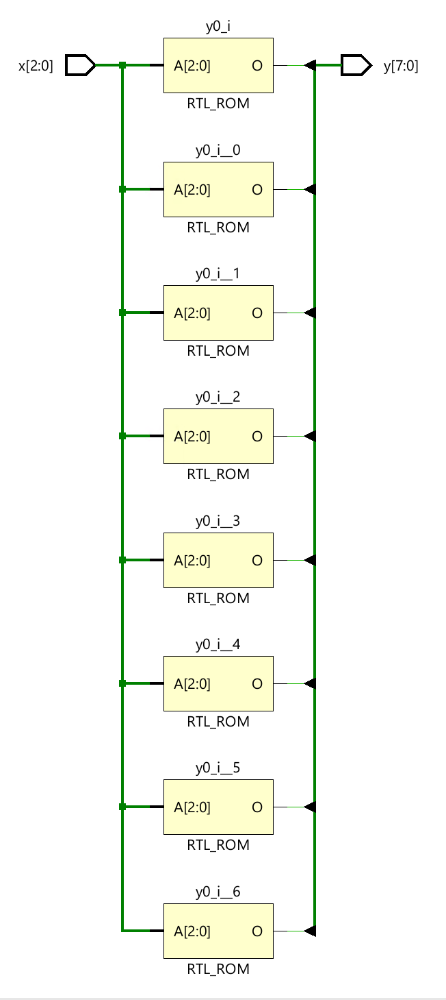
Then we can run Simulation to check the code of the lab3_1_1 module.
decoder_3to8_dataflow_tb.v
// Define the testbench module with no ports as it's a top-level entity
module decoder_3to8_dataflow_tb();
// Declare input signals as reg type to drive them with procedural assignments
reg [2:0] x;
// Declare output signals as wire since they will be driven by the instance of DUT (Device Under Test)
wire [7:0] y;
// Declare an integer for use in the for-loop
integer k;
// Instantiate the Device Under Test (DUT) with named port mapping
lab3_1_1 DUT (.x(x), .y(y));
// Initial block to define the sequence of test cases
initial begin
// Initialize input
x = 0; // Start with input 0
// Loop through all possible inputs from 0 to 7
for (k = 0; k < 8; k = k + 1) begin
#5 x = k; // Assign the value of k to x and wait for 5-time units
end
#10; // Wait for 10 time units before ending the simulation
// Optional: Add $finish to end the simulation explicitly.
// Some simulation environments automatically end when there are no more events,
// but others require $finish to terminate the simulation.
$finish;
end
// Optional: Monitor changes in variables
// Display changes in input and output to observe the test results
initial begin
$monitor("Time = %t, Input x = %b, Output y = %b", $time, x, y);
end
endmodule
We can run Simulation to check the code by clicking the Run Simulation under the SIMULATION and choosing the first Run Behavioral Simulation.
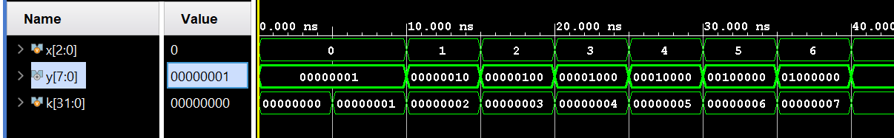
Then, we can click on the Run synthesis under the SYNTHESIS and Run implementation under the IMPLEMENTATION. We should add the appropriate board-related master XDC file to the project and edit it to include the related pins like the below:
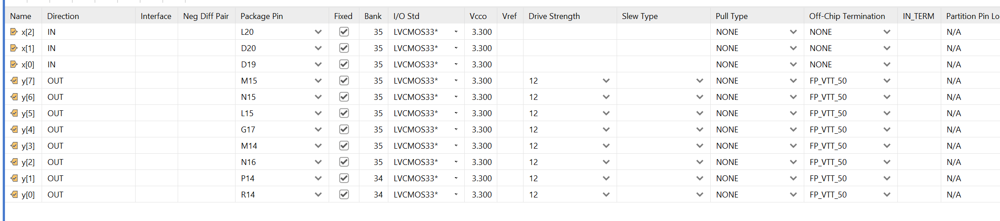
Because the board has four LEDs, so we can also use the RGB LED(LD5 and LD4).
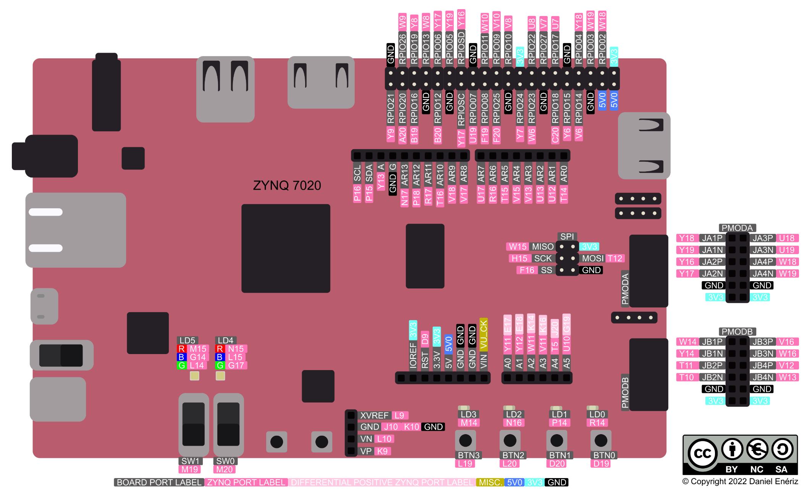
Click on the Generate Bitstream under the PROGRAM AND DEBUG, and when writing bitstream is complete, we can download the file to the board and verify the lab.
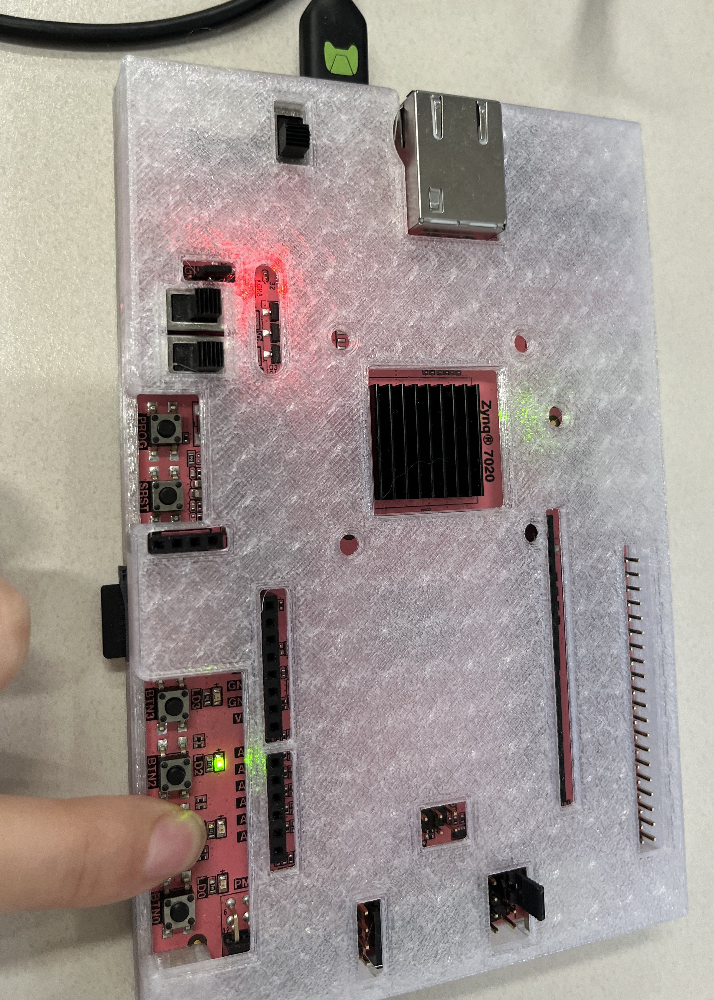
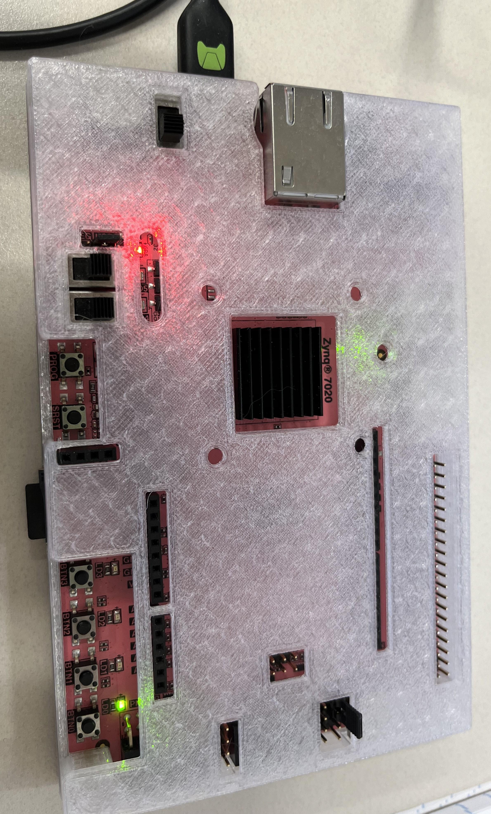
Part3-1-2
Design and implement a popular IC, 74138, functionality using dataflow modeling and the decoder you used in 1-1. The IC symbol and truth table are given below.
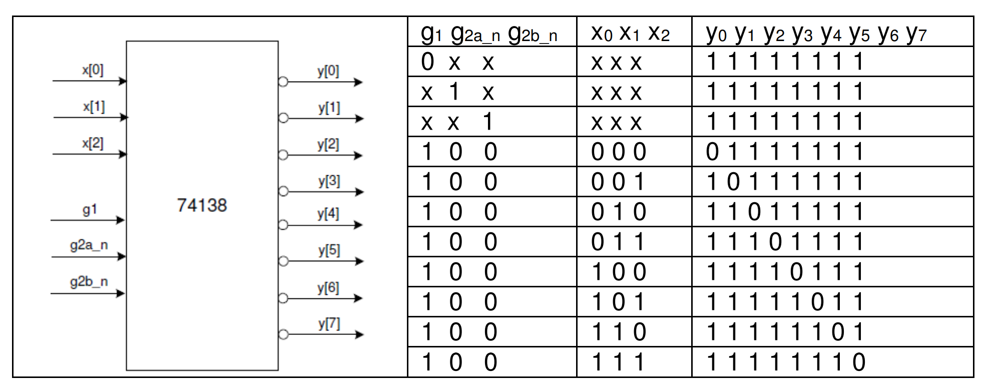
X = don’t care
Note that this is very similar to the one you had created in 1-1; it has additional control (Enable) signals G1, /G2A, and /G2B. These enable signals to simplify decoding in some systems.
Create and add the Verilog module, named decoder_74138_dataflow, instantiating the model you had developed in 1-1. Add additional logic by using the dataflow modeling constructs to model the desired functionality.
lab3_1_2.v
module Lab3_1_2(
input [2:0] x, // 3-bit input
input G1, // Active-high enable
input G2A_n, G2B_n, // Active-low enables
output [7:0] y // 8-bit output
);
// Internal signal for combined enable condition
wire enable;
wire [7:0] y_data;
// The decoder is enabled only if G1 is high and both G2A_n and G2B_n are low
assign enable = G1 & ~G2A_n & ~G2B_n;
// Instantiate the basic 3-to-8 decoder, passing the enable condition
// The outputs are only asserted if the enable condition is true
lab3_1_1 basic_decoder (
.x(x),
.y(y_data)
);
// Modify the output based on the enable condition using dataflow constructs
// If 'enable' is not asserted, all outputs should be low.
assign y[0] = enable & y_data[0];
assign y[1] = enable & y_data[1];
assign y[2] = enable & y_data[2];
assign y[3] = enable & y_data[3];
assign y[4] = enable & y_data[4];
assign y[5] = enable & y_data[5];
assign y[6] = enable & y_data[6];
assign y[7] = enable & y_data[7];
endmodule
Then, we can run Simulation to check the code of the lab3_1_2 module.
decoder_74138_dataflow_tb.v
// Define the testbench module with no ports, as it's a top-level entity
module decoder_74138_dataflow_tb();
// Declare input signals as reg type to drive them with procedural assignments
reg [2:0] x; // 3-bit address input
reg g1, g2a_n, g2b_n; // Enable inputs for the decoder, g1 is active high, g2a_n and g2b_n are active low
// Declare output signals as wire since they will be driven by the instance of DUT (Device Under Test)
wire [7:0] y; // 8-bit output representing the decoded line
// Declare an integer for use in the for-loop
integer k;
// Instantiate the Device Under Test (DUT) with the named port mapping
Lab3_1_2 DUT (.G1(g1), .G2A_n(g2a_n), .G2B_n(g2b_n), .x(x), .y(y));
// Initial block to define the sequence of test cases
initial begin
// Test all possible input combinations under different enable configurations
// Set initial conditions: Decoder disabled due to g2a_n and g2b_n being high
x = 0; g1 = 0; g2a_n = 1; g2b_n = 1;
// Iterate through all input combinations
for (k = 0; k < 8; k = k + 1)
#5 x = k; // Change address input every 5 time units
#10; // Wait for 10 time units before changing enable conditions
// Enable the decoder with G1 high and G2A_n low
x = 0; g1 = 1; g2a_n = 0; g2b_n = 1;
for (k = 0; k < 8; k = k + 1)
#5 x = k;
#10; // Wait and switch to another enable condition
// Enable the decoder with G1 low and G2B_n low
x = 0; g1 = 0; g2a_n = 1; g2b_n = 0;
for (k = 0; k < 8; k = k + 1)
#5 x = k;
#10;
// Fully enable the decoder with both G1 high and G2B_n low (G2A_n also low for typical 74138 behavior)
x = 0; g1 = 1; g2a_n = 0; g2b_n = 0;
for (k = 0; k < 8; k = k + 1)
#5 x = k; // Test all combinations when fully enabled
#10; // Wait before ending simulation
// End the simulation
$finish;
end
// Optional: Monitor changes in variables
// This helps in debugging and observing the behavior of the decoder under different enabled signals
initial begin
$monitor("Time = %t, Enable: G1=%b, G2A_n=%b, G2B_n=%b, Input x = %b, Output y = %b", $time, g1, g2a_n, g2b_n, x, y);
end
endmodule
We can run Simulation to check the code by clicking the Run Simulation under the SIMULATION and choosing the first Run Behavioral Simulation.
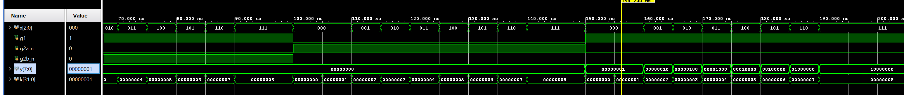
Multi-output Encoder Circuits
The Encoder circuit converts information from one format (code) to another for standardization, speed, secrecy, security, or saving space by shrinking size. In digital circuits, encoding information may reduce size and/or prioritize functions. Examples of widely used encoder circuits include priority encoders, Huffman encoders, etc.
Part3-2-1
Design an 8-to-3 priority encoder whose truth table is given below. Use behavioral modeling.
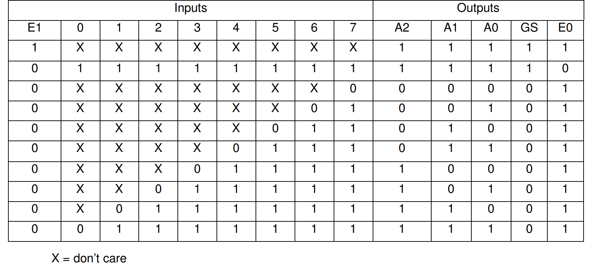
Create and add the Verilog module with v and en_in_n input; y, en_out, and gs output. The v input will be 8-bit data inputs (labeled 0 to 7 in the table), en_in_n input will be one bit (E1), y output will be 3-bit (A2, A1, A0), en_out will be one bit output (GS), and en_out will be one bit output (E0).
lab3_2_1.v
module lab3_2_1(
input [7:0] v, // 8-bit data inputs representing the binary code
input en_in_n, // Active low enable input indicating whether the encoder should operate
output reg [2:0] y, // 3-bit output representing the encoded value
output reg en_out, // Active low enable output indicating valid output (E0)
output reg gs // Group Select, active low when any input is active
);
// Combine enable signal and inputs into a single 9-bit vector for easier case handling
wire [8:0] inputs;
assign inputs = {en_in_n, v}; // Combine enable input with data inputs for case evaluation
// Behavioral block to determine the output based on the inputs
always@(*)
begin
case (inputs)
// Check for encoder being disabled or no input active
9'b1xxxxxxxx: // If enable is high (active low logic), the encoder is disabled
begin
y = 3'b111;
en_out = 1;
gs = 1;
end
9'b011111111:
begin
y = 3'b111;
en_out = 0;
gs = 1;
end
9'b0xxxxxxx0:
begin
y = 3'b000;
en_out = 1;
gs = 0;
end
9'b0xxxxxx01:
begin
y = 3'b001;
en_out = 1;
gs = 0;
end
9'b0xxxxx011:
begin
y = 3'b010;
en_out = 1;
gs = 0;
end
9'b0xxxx0111:
begin
y = 3'b011;
en_out = 1;
gs = 0;
end
9'b0xxx01111:
begin
y = 3'b111;
en_out = 1;
gs = 0;
end
9'b0xx011111:
begin
y = 3'b100;
en_out = 1;
gs = 0;
end
9'b0xx011111:
begin
y = 3'b101;
en_out = 1;
gs = 0;
end
9'b0x0111111:
begin
y = 3'b110;
en_out = 1;
gs = 0;
end
9'b001111111:
begin
y = 3'b111;
en_out = 1;
gs = 0;
end
default: begin
y = 3'b000;
en_out = 0;
gs = 0;
end
endcase
end
endmodule
Read-Only Memories
Read-only memories (ROM) consist of interconnected arrays to store an array of binary information. Once the binary information is stored, it can be read at any time but cannot be altered. Large ROMs are typically used to store programs and/or data that will not change by the other circuitry in the system. Small ROMs can be used to implement combinatorial circuits. A ROM uses a decoder, similar to one designed in 1-1 earlier, to address a particular location.
A ROM will have m address input pins and n information output pins to store 2^m words information, each word being n bit in length. The content is accessed by placing an address, and the content of the corresponding word is read at the output pins.
In Verilog HDL, memories can be defined as a two-dimensional array using reg data type, as illustrated below:
reg [3:0] MY_ROM [15:0];
where reg is data type, MY_ROM is a 16x4 memory with 16 locations each location being 4-bit wide. If the memory is to be modeled as read-only then two things must happen: (i) memory should only be read and not written into, and (ii) memory should somehow be initialized with the desired content. Verilog HDL provides a system task, called $readmemb, to initialize memory with content. Following is an example of the definition and usage of 4x2 ROM.
module ROM_4x2 (ROM_data, ROM_addr);
output [1:0] ROM_data;
input [1:0] ROM_addr;
reg [1:0] ROM [3:0]; // defining 4x2 ROM
assign ROM_data = ROM[ROM_addr]; // reading ROM content at the ROM_addr address
initial $readmemb ("ROM_data.txt", ROM, 0, 3); // load ROM content from ROM_data.txt file
//please correct the absolute path to the ROW_data.txt file, the above is mine and will not work for yours
endmodule
The ROM_data.txt file, for this example, should be present in the same directory where the model is defined (since no directory path is given), and may have 8 or less lines such as:
10
01
11
00
Note that if the number of lines is less than the size of the ROM, the unspecified locations will be initialized with 0s. Also, note that there is another system task available, called $readmembh, which allows the data file to be written using hexadecimal symbols.
For adding text files: Select “Add sources” from the Project Navigator > Add or create Design sources > Add files In the Add source file window, select “File of type” as “All files”.
For the example, we can also run a simulation to verify.
tb.v
// Define the testbench module with no ports as it's a top-level entity
module ROM_4x2_tb;
// Declare the ROM address and data lines as wires and regs appropriately
reg [1:0] ROM_addr; // Address lines for the ROM as input
wire [1:0] ROM_data; // Data lines from the ROM as output
// Instantiate the Device Under Test (DUT) with the named port mapping
ROM_4x2 DUT(
.ROM_data(ROM_data),
.ROM_addr(ROM_addr)
);
// Initial block to define the sequence of test cases
initial begin
// Initialize ROM address
ROM_addr = 2'd0;
#10; // Wait for ten time units
// Apply different addresses and observe the data
ROM_addr = 2'd1;
#10; // Change address every 10 time units to simulate reading different ROM locations
ROM_addr = 2'd2;
#10;
ROM_addr = 2'd3;
#10; // Wait after the last address to observe the last set of data
// Add more cases if necessary
// End of simulation
// $finish;
end
// Optional: Monitor changes in variables
initial begin
$monitor("Time = %t, Address = %b, Data = %b", $time, ROM_addr, ROM_data);
end
endmodule
The result is shown below:
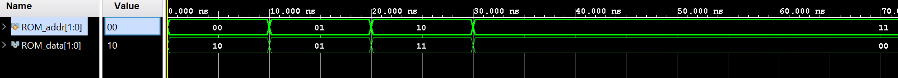
Part3-3-1
Design a 2-bit comparator that compares two 2-bit numbers and asserts outputs indicating whether the decimal equivalent of word A is less than, greater than, or equal to that of word B. You will model ROM and use the $readmemb task.
Create and add the Verilog module with two inputs (a, b) and three outputs (lt, gt, and eq) using ROM and $readmemb system task.
lab3_3_1.v
module lab3_3_1(
input [1:0] a, // 2-bit input a
input [1:0] b, // 2-bit input b
output reg Lt, // a < b
output reg Eq, // a == b
output reg Gt // a > b
);
reg [2:0] ROM[15:0]; // Define a ROM with enough space
wire [3:0] addr; // Combined address from A and B
assign addr = {a, b}; // Combine A and B to form ROM address
initial begin
$readmemb("C:/all/Verilog_labs/lab3/project_2/ROM_data.txt", ROM); // Load ROM content from file
// please correct the absolute path to the ROW_data.txt file, the above is mine and will not work for yours
end
always @(*) begin
case (ROM[addr])
3'b001: begin // a == b
Lt = 0;
Eq = 1;
Gt = 0;
end
3'b010: begin // a > b
Lt = 0;
Eq = 0;
Gt = 1;
end
3'b100: begin // a < b
Lt = 1;
Eq = 0;
Gt = 0;
end
default: begin // Default case for safety
Lt = 0;
Eq = 0;
Gt = 0;
end
endcase
end
endmodule
Create and add a text file that describes the design output.
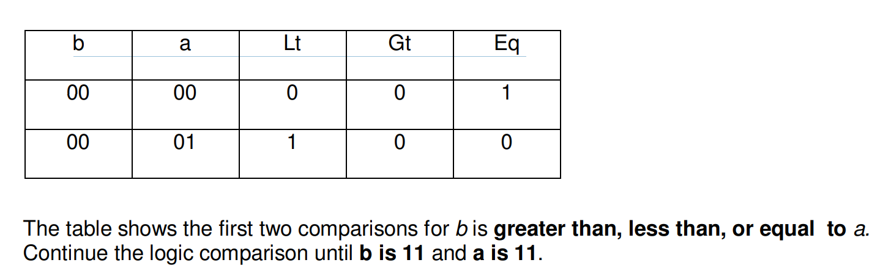
a and b are concatenated to form a 4-bit address (addr), which is used to access a specific location in the ROM like below:
ROM_data.txt
001
100
100
100
010
001
100
100
010
010
001
100
010
010
010
001
Create the logic in a document and save it as a .txt file. Then click on Add Sources under the Flow Navigator. Select the Add or create design sources and click next. Click the green plus button and add the file. Add the .txt file and click finish.
We can run Simulation to check the code by clicking the Run Simulation under SIMULATION and choosing the first Run Behavioral Simulation.
ROM_comparator_tb.v
// Testbench for the ROM-based 2-bit comparator
module ROM_comparator_tb;
// Testbench signals
reg [1:0] a, b; // Inputs to the comparator (2-bit each)
wire Lt, Eq, Gt; // Outputs from the comparator: Less than, Equal, Greater than
// Instantiate the Device Under Test (DUT)
lab3_3_1 DUT(
.a(a), // Connect input 'a' to the DUT
.b(b), // Connect input 'b' to the DUT
.Lt(Lt), // Connect 'Lt' output from the DUT
.Eq(Eq), // Connect 'Eq' output from the DUT
.Gt(Gt) // Connect 'Gt' output from the DUT
);
integer i; // Loop counter variable
// Test sequence
initial begin
// Display header
$display("Time: %t | a: %b, b: %b | Lt: %b, Eq: %b, Gt: %b",
$time, a, b, Lt, Eq, Gt);
// Loop to test all possible combinations of inputs 'a' and 'b'
for (i = 0; i < 16; i = i + 1) begin
#5; // Small delay to stabilize input changes
{a, b} = i; // Assign 'i' value to combined inputs 'a' and 'b'
#5; // Wait for the combinational logic to produce output
end
// Stop the simulation after all combinations have been tested
#20 $stop;
end
The simulation result is shown below:
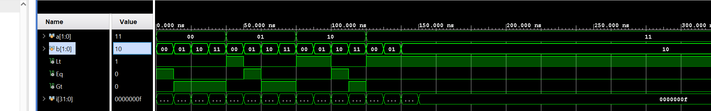
If we want to implement it on the board, we need to change the code and add one another IP like below：
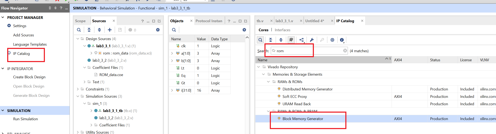
Double-click on and have a setting like the below:
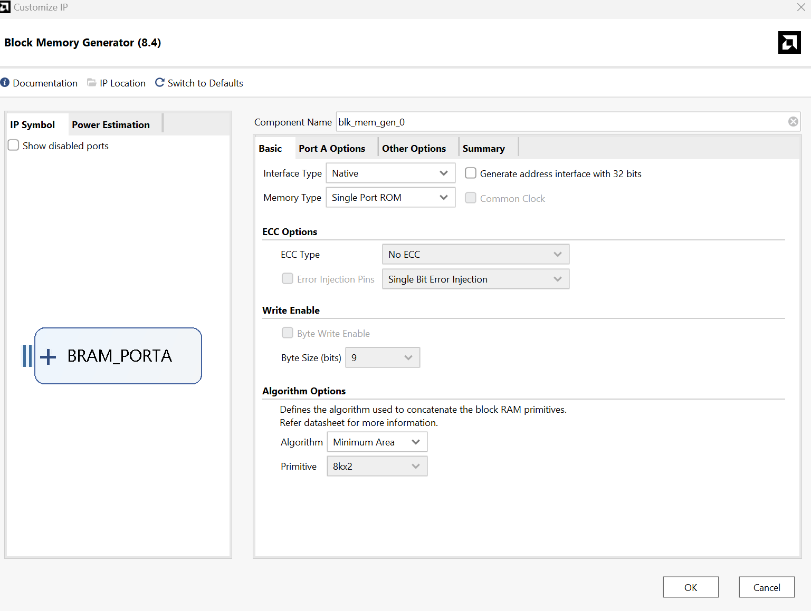
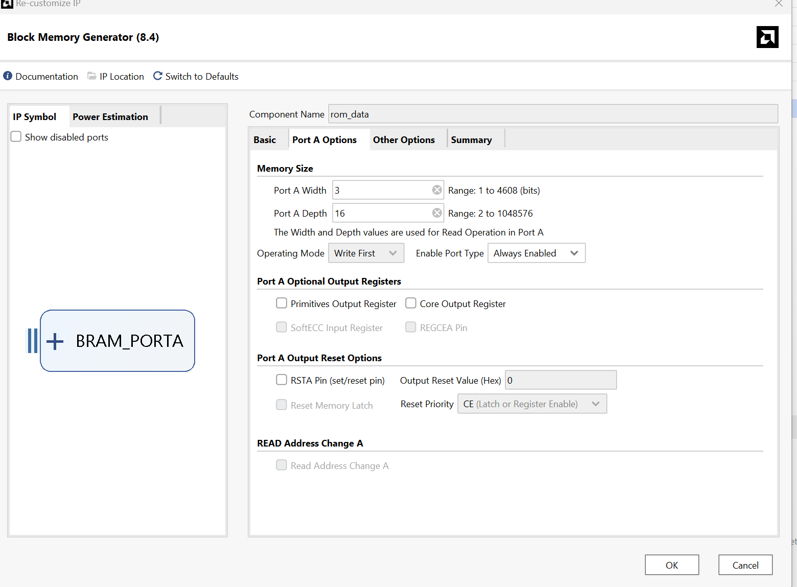
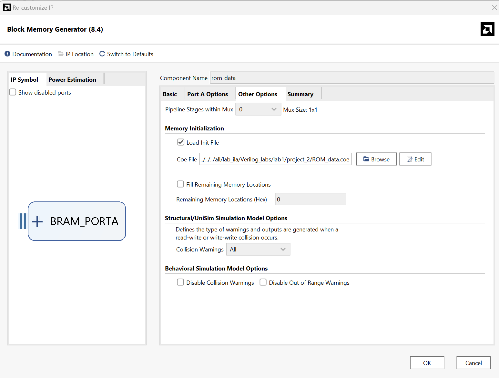
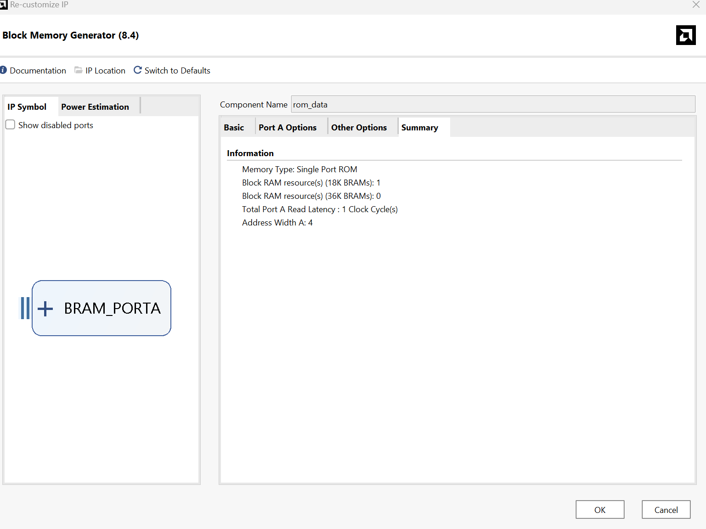
And then we can find the IP instantiation template below:
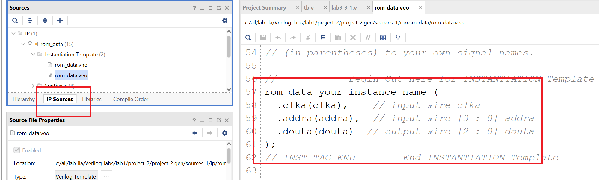
lab3_3_1_board.v
// This module simulates a comparison between two 2-bit numbers using a ROM
module lab3_3_1(
input clk, // Clock input for synchronous operations
input [1:0] a, // First 2-bit input for comparison
input [1:0] b, // Second 2-bit input for comparison
output reg Lt, // Output flag, set if 'a' is less than 'b'
output reg Eq, // Output flag, set if 'a' equals 'b'
output reg Gt // Output flag, set if 'a' is greater than 'b'
);
// Combined address for ROM: concatenates inputs 'a' and 'b'
wire [3:0] addr_reg; // Combines 'a' and 'b' to form the ROM address
// Output from ROM, stores comparison results based on 'a' and 'b'
wire [2:0] douta; // Data output from ROM based on address 'addr_reg'
// Instance of ROM block
rom_data rom (
.clka(clk), // Provides the system clock to the ROM
.addra(addr_reg), // Supplies the address to ROM
.douta(douta) // Retrieves the comparison result from ROM
);
// Assign block to combine 'a' and 'b' into a single address
// This part was initially inside an always block, but for a combinational approach, we use 'assign'
assign addr_reg = {a, b}; // Combines 'a' and 'b' to form the address without waiting for the clock edge
// Combinational logic to set comparison flags based on ROM's output
// This block decides which of the flags (Lt, Eq, Gt) should be set based on the value of 'douta' from the ROM
always @(*) begin // Triggered on any change of 'douta'
case (douta)
3'b001: begin // ROM output for 'a == b'
Lt = 0;
Eq = 1;
Gt = 0;
end
3'b010: begin // ROM output for 'a < b'
Lt = 1;
Eq = 0;
Gt = 0;
end
3'b100: begin // ROM output for 'a > b'
Lt = 0;
Eq = 0;
Gt = 1;
end
default: begin // Safety default case to handle unexpected ROM outputs
Lt = 0;
Eq = 0;
Gt = 0;
end
endcase
end
endmodule
ROM_data.coe
memory_initialization_radix=2;
memory_initialization_vector=
001,
100,
100,
100,
010,
001,
100,
100,
010,
010,
001,
100,
010,
010,
010,
001;
tb.v
// Testbench for lab3_3_1: Compares two 2-bit numbers and sets output flags
module lab3_3_1_tb;
// Define testbench-specific signals
reg clk; // Clock signal used for synchronizing the DUT
reg [1:0] a, b; // 2-bit inputs to be compared by the DUT
wire Lt, Eq, Gt; // Outputs from the DUT representing comparison results
// Instantiate the Device Under Test (DUT)
lab3_3_1 DUT(
.clk(clk), // Connect the testbench clock to the DUT clock
.a(a), // Connect 'a' input of the testbench to the DUT
.b(b), // Connect 'b' input of the testbench to the DUT
.Lt(Lt), // Connect 'Lt' output of the DUT to the testbench
.Eq(Eq), // Connect 'Eq' output of the DUT to the testbench
.Gt(Gt) // Connect 'Gt' output of the DUT to the testbench
);
// Clock generation process
initial begin
clk = 1; // Initialize the clock signal
forever #5 clk = ~clk; // Toggle the clock every 5-time units to generate a periodic signal
end
// Test sequence process
initial begin
// Delay to ensure the DUT is properly initialized before starting the tests
#5; // Initial delay to synchronize with clock
// Loop through all possible combinations of 'a' and 'b'
for (i = 0; i < 16; i = i + 1) begin
{a, b} = i; // Assign new values to 'a' and 'b'
#10; // Wait for one clock cycle between assignments to allow DUT to process
end
end
// Monitoring process: Prints the values of inputs and outputs at every simulation step
initial begin
$monitor("Time: %t | a: %b, b: %b | Lt: %b, Eq: %b, Gt: %b",
$time, a, b, Lt, Eq, Gt); // Print the time and current signal values
end
endmodule
We can also run the simulation and see the result below:
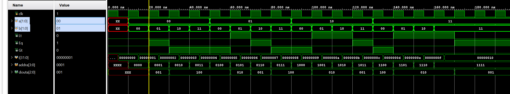
Then we can click on the Run synthesis under the SYNTHESIS and Run implementation under the IMPLEMENTATION. We should add the appropriate board-related master XDC file to the project and edit it to include the related pins like the below:
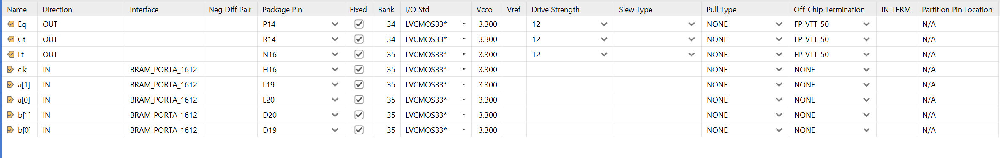
Generate the bitstream and program device like Lab1.
Then you can press the button on the board, and you can see the LED is on like below:
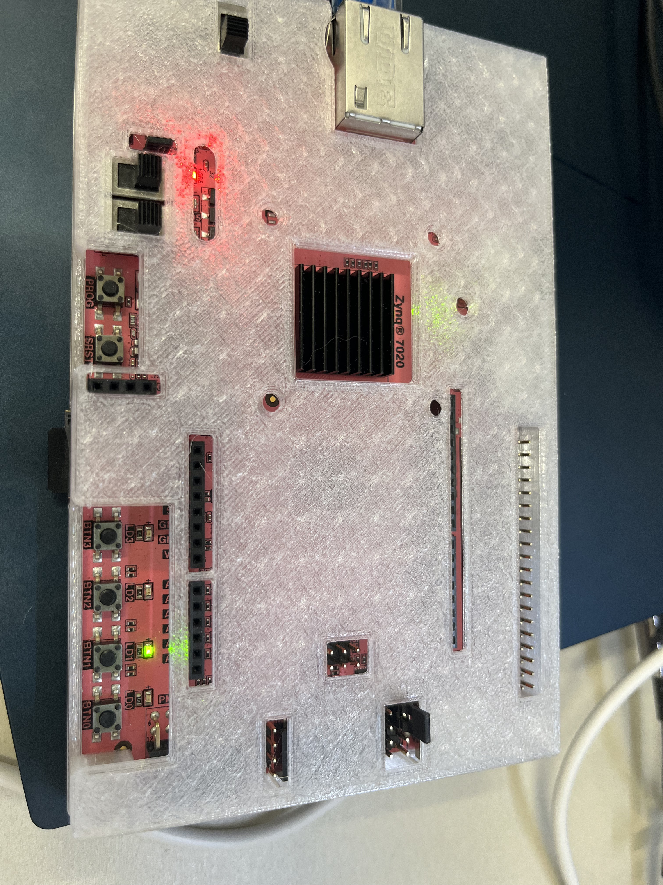
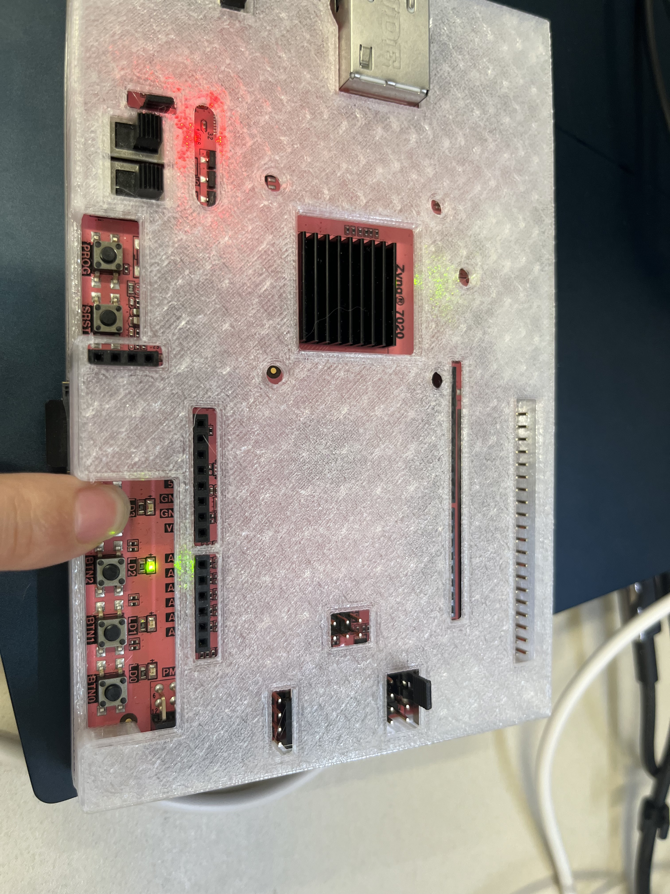
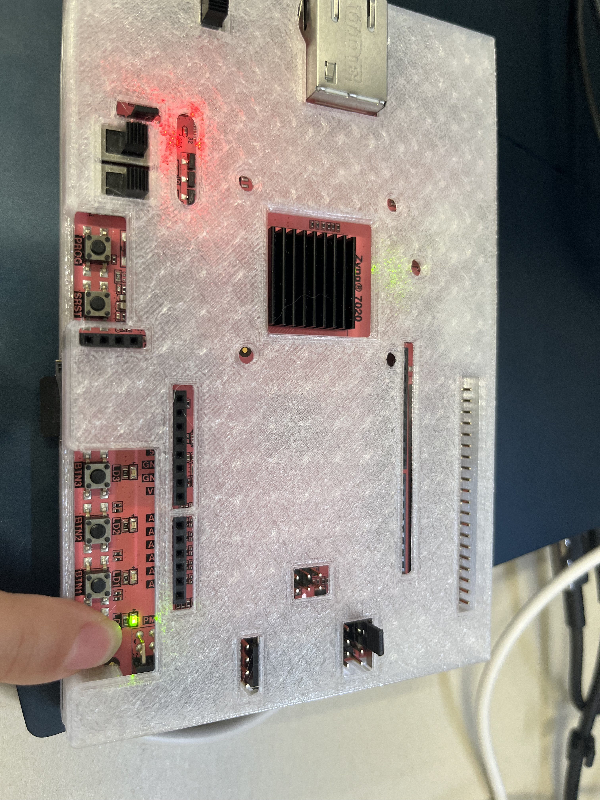
Part3-3-2
Implement a 2-bit by 2-bit multiplier using a ROM. Output the product in binary on four LEDs.
Create and add the Verilog module with two 2-bit inputs (a, b), and a 4-bit product output using ROM and $readmemb system task.
lab3_3_2.v
module lab3_3_2(
input [1:0] a,
input [1:0] b,
output [3:0] product
);
// Calculate the address for ROM based on inputs 'a' and 'b'
wire [3:0] address;
assign address = {a, b};
// ROM for storing pre-computed products, 16x4 bits
reg [3:0] ROM[15:0];
// Initialize ROM with pre-computed products using $readmemb system task
initial begin
$readmemb("C:/all/Verilog_labs/lab3/project_2/ROM_data.txt", ROM); // Load ROM content from file
// please correct the absolute path to the ROW_data.txt file, the above is mine and will not work for yours
end
assign product = ROM[address];
// Retrieve product from ROM based on the current address
endmodule
ROM_data.txt
0000
0000
0000
0000
0000
0001
0010
0011
0000
0010
0100
0110
0000
0011
0110
1001
tb_2.v
// Testbench for 2-bit multiplier using ROM
module tb_2;
// Define testbench-specific signals
reg [1:0] a, b; // Inputs to the multiplier
wire [3:0] product; // Output from the multiplier (4-bit product)
// Instantiate the Device Under Test (DUT)
lab3_3_2 DUT(
.a(a), // Map testbench input 'a' to DUT input 'a'
.b(b), // Map testbench input 'b' to DUT input 'b'
.product(product) // Map DUT output 'product' to testbench wire 'product'
);
// Test sequence for checking all possible combinations of inputs
initial begin
// Initialize inputs to zero
a = 2'b00; b = 2'b00;
#10; // Wait for 10 time units between input changes for the DUT to process
// Iterate through all possible combinations of 'a' and 'b'
// The following code blocks manually set every possible combination of inputs
a = 2'b00; b = 2'b01; #10;
a = 2'b00; b = 2'b10; #10;
a = 2'b00; b = 2'b11; #10;
a = 2'b01; b = 2'b00; #10;
a = 2'b01; b = 2'b01; #10;
a = 2'b01; b = 2'b10; #10;
a = 2'b01; b = 2'b11; #10;
a = 2'b10; b = 2'b00; #10;
a = 2'b10; b = 2'b01; #10;
a = 2'b10; b = 2'b10; #10;
a = 2'b10; b = 2'b11; #10;
a = 2'b11; b = 2'b00; #10;
a = 2'b11; b = 2'b01; #10;
a = 2'b11; b = 2'b10; #10;
a = 2'b11; b = 2'b11; #10;
// Note: The $finish command can be uncommented to end the simulation after the last test case.
// $finish;
end
// Monitoring process for changes in important signals
// This prints the values of 'a', 'b', and 'product' at every time step where they change
initial begin
$monitor("Time = %t: a = %b, b = %b, Product = %b", $time, a, b, product);
end
// Additional: Reading and displaying ROM data for debugging purposes
// This block is not directly related to testing the DUT but can be useful for verifying ROM contents
reg [3:0] RAM [0:15]; // Temporary storage to display ROM contents
initial $readmemb("ROM_data.txt", RAM); // Read contents of the ROM data file into RAM
integer i;
initial begin
$display("ROM data:"); // Display header for ROM data section
for (i = 0; i < 16; i = i + 1) begin
$display("%d: %h", i, RAM[i]); // Display each line of ROM data with its index
end
end
endmodule
We can also run the simulation and see the result below:
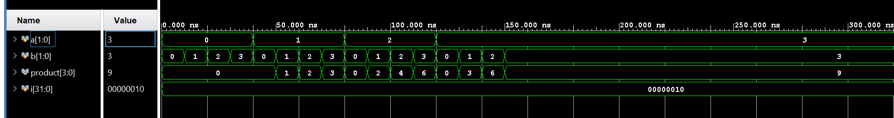
Add the appropriate board-related master XDC file to the project and edit it to include the related pins, assigning a to btn3-btn2, b to btn1-btn0, and product to LED3-LED0, you can refer to the Part-3-3-1
Conclusion
In this lab, you learned how to model multiple output circuits such as decoders, encoders, and ROM. You also learned how to use a system task $readmemb to initialize ROM memory. There are more system tasks that the language supports and you will learn some of them in the next lab.